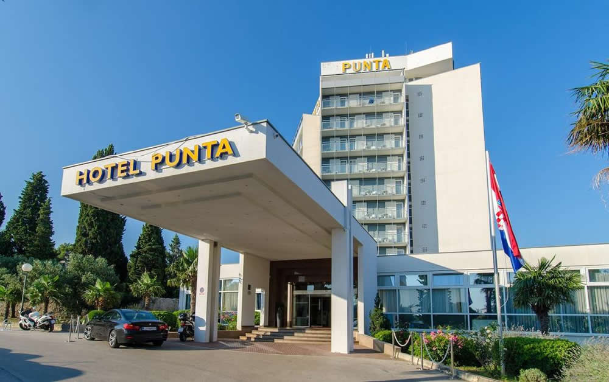
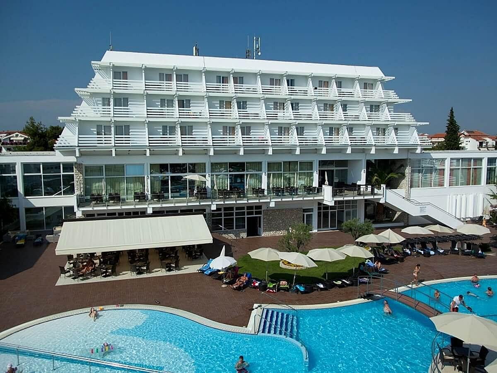
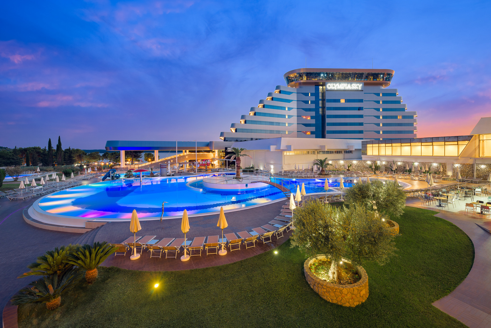

Moje misto

Hotelski kompleks Punta nalazio se pored mora u borovoj šumi na istoimenom poluotoku samo 50 metara od mora i plaže. Kompleks je udaljen od centra grada svega 3 minute lagane šetnje i živi punim život zajedno sa gradom. Kristalno čisto više, sa uređenom betonskom i šljunkovitom plažom, zaštićeno je s nekoliko otoka otvorenog mora. Svega stotinjak metara dalje nalazi se od šljunčano-pješčane plaže, pogodne za djecu i neplivače.

Olympia Vodice nudi novu dimenziju odmora na hrvatskom Jadranu. Vrhunski smještaj, odličnu uslugu i bogatu prirodu. Odaberite smještaj koji će vas iznenaditi obiljem aktivnosti i sadržaja, novim poticajnim iskustvima, koji je skladno uklopljen u život lokalnog stanovništva i kojim ćete obnoviti i osvježiti svoje tijelo, um i duh.

Olympia Sky hotel prve je goste primio 24. lipnja, a svečano otvaranje održano je 07. srpnja 2017. Hotel ima 149 smještajnih jedinica od čega je 19 apartmana. Hotel je izgrađen s najvišim standardima ekološke učinkovitosti i s brojnim pratećim sadržajima. Na 9. katu nalazi se natkriveni bazen s prekrasnim pogledom na zelene otoke, a novu dimenziju donosimo i u gastronomskom pogledu otvaranjem Sky restorana na 10. katu s odličnom a la carte ponudom. Doručak i večera za goste hotela je u novom restoranu na 1. katu. Dio apartmana na svom balkonu ima hidromasažnu kadu.